Change analysis for Nepal for PRIMAP-hist v2.7_final compared to
v2.6.1_final
Overview over
emissions by sector and gas
The following figures show the aggregate national total emissions
excluding LULUCF AR6GWP100 for the country reported priority scenario.
The dotted linesshow the v2.6.1_final data.
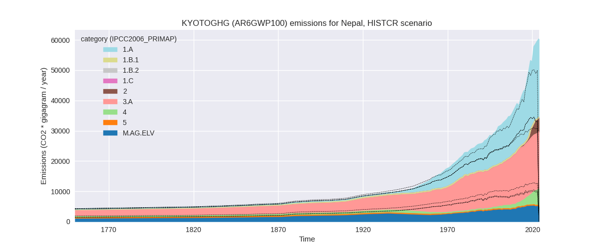
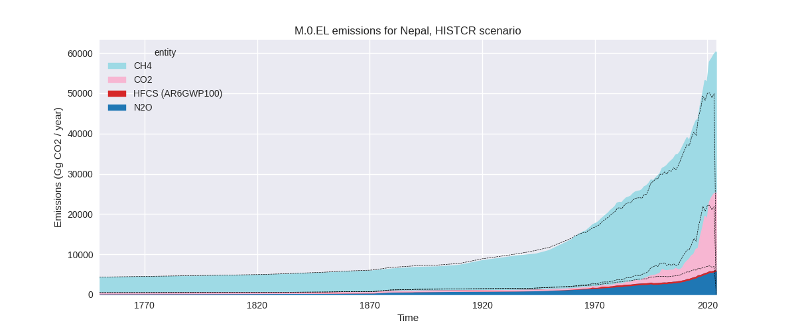
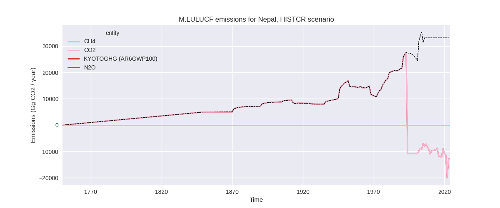
The following figures show the aggregate national total emissions
excluding LULUCF AR6GWP100 for the third party priority scenario. The
dotted linesshow the v2.6.1_final data.
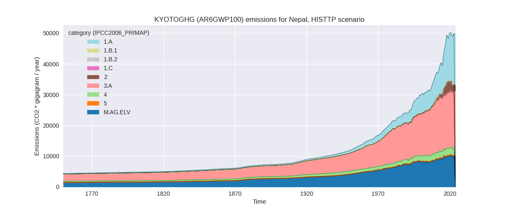
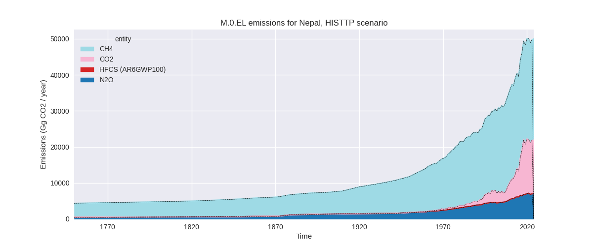
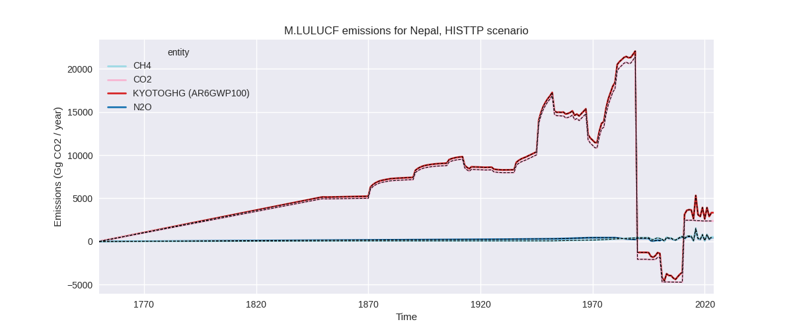
Overview over changes
In the country reported priority scenario we have the following
changes for aggregate Kyoto GHG and national total emissions excluding
LULUCF (M.0.EL):
- Emissions in 2023 have changed by 19.5%% (9715.93 Gg CO2 / year)
- Emissions in 1990-2023 have changed by 6.5%% (2295.28 Gg CO2 / year)
In the third party priority scenario we have the following changes
for aggregate Kyoto GHG and national total emissions excluding LULUCF
(M.0.EL):
- Emissions in 2023 have changed by -0.3%% (-130.39 Gg CO2 / year)
- Emissions in 1990-2023 have changed by 0.0%% (16.66 Gg CO2 / year)
Most
important changes per scenario and time frame
In the country reported priority scenario the
following sector-gas combinations have the highest absolute impact on
national total KyotoGHG (AR6GWP100) emissions in 2023
(top 5):
- 1: 1.A, CH4 with 7224.05 Gg CO2 / year (207.6%)
- 2: M.AG.ELV, N2O with -2598.97 Gg CO2 / year (-50.4%)
- 3: 2, CO2 with 2453.01 Gg CO2 / year (104.7%)
- 4: M.AG.ELV, CH4 with -2085.40 Gg CO2 / year (-47.4%)
- 5: 1.A, CO2 with 1917.67 Gg CO2 / year (15.5%)
In the country reported priority scenario the
following sector-gas combinations have the highest absolute impact on
national total KyotoGHG (AR6GWP100) emissions in
1990-2023 (top 5):
- 1: 1.A, CH4 with 6823.25 Gg CO2 / year (238.9%)
- 2: M.AG.ELV, CH4 with -2263.87 Gg CO2 / year (-50.3%)
- 3: M.AG.ELV, N2O with -1999.86 Gg CO2 / year (-51.0%)
- 4: 4, CH4 with -528.28 Gg CO2 / year (-31.7%)
- 5: 3.A, CH4 with 239.34 Gg CO2 / year (1.6%)
In the third party priority scenario the following
sector-gas combinations have the highest absolute impact on national
total KyotoGHG (AR6GWP100) emissions in 2023 (top
5):
- 1: 1.A, CO2 with -215.48 Gg CO2 / year (-1.7%)
- 2: 4, CO2 with 85.10 Gg CO2 / year (inf%)
- 3: M.AG.ELV, CO2 with 0.00 Gg CO2 / year (0.0%)
- 4: 5, N2O with 0.00 Gg CO2 / year (0.0%)
- 5: 4, N2O with 0.00 Gg CO2 / year (0.0%)
In the third party priority scenario the following
sector-gas combinations have the highest absolute impact on national
total KyotoGHG (AR6GWP100) emissions in 1990-2023 (top
5):
- 1: 4, CO2 with 34.67 Gg CO2 / year (inf%)
- 2: 1.A, CO2 with -18.01 Gg CO2 / year (-0.4%)
- 3: 1.B.1, CO2 with 0.00 Gg CO2 / year (3.0%)
- 4: 1.A, N2O with 0.00 Gg CO2 / year (0.0%)
- 5: 5, N2O with 0.00 Gg CO2 / year (0.0%)
Notes on data changes
Here we list notes explaining important emissions changes for the
country.
- CRT data from BTR1 has been added allowing the use of country
reported data for the first time. Consequently this introduces
completely new time-series as the CR time-series was identical to the TP
time-series in PRIMAP-hist v2.6.1 and earlier versions.
- The changes are much higher for recent years as especially recent
emissions differ between country reported and third party data
especially CO2 in 2.A.
- Many of the differences that affect the full time-series are for
sectors and gases which have high uncertainty, such as agriculture,
waste, and CH4 from energy.
- The TP time series has only changed for energy CO2 because of the
new EI data and waste CO2 which has been added from country reported
data.
Changes by sector and gas
For each scenario and time frame the changes are displayed for all
individual sectors and all individual gases. In the sector plot we use
aggregate Kyoto GHGs in AR6GWP100. In the gas plot we usenational total
emissions without LULUCF.
country reported scenario
2023
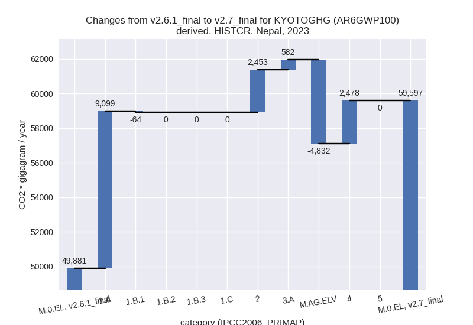
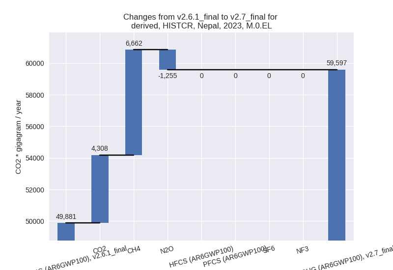
1990-2023
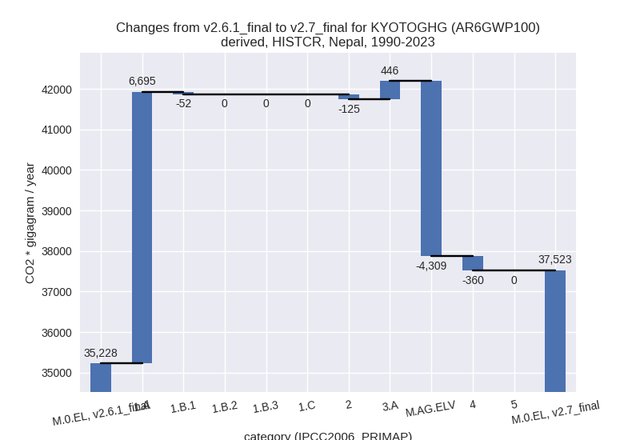
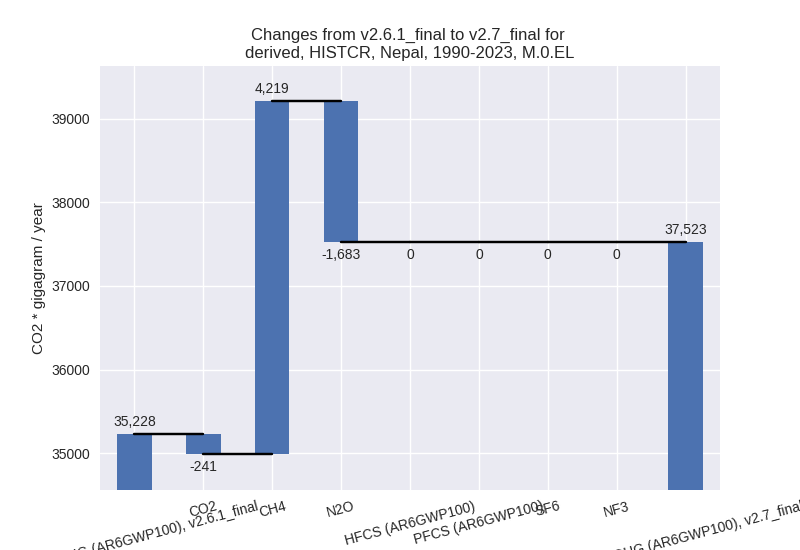
third party scenario
2023
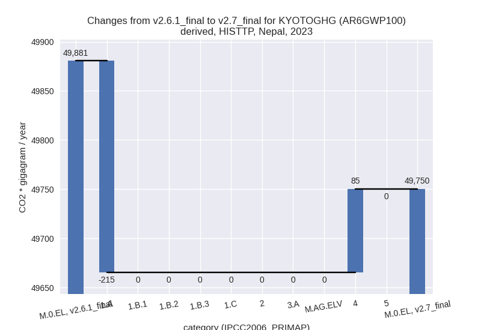
1990-2023
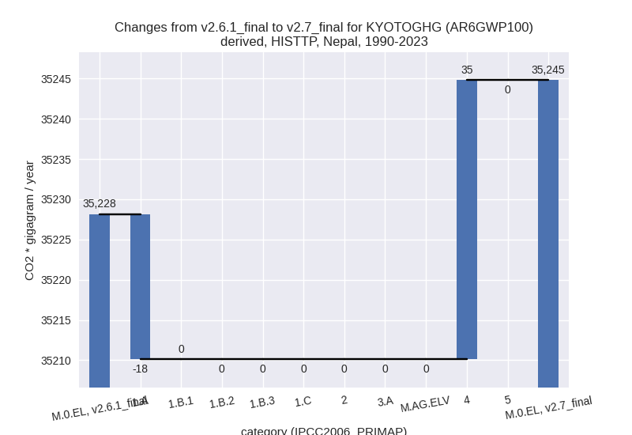
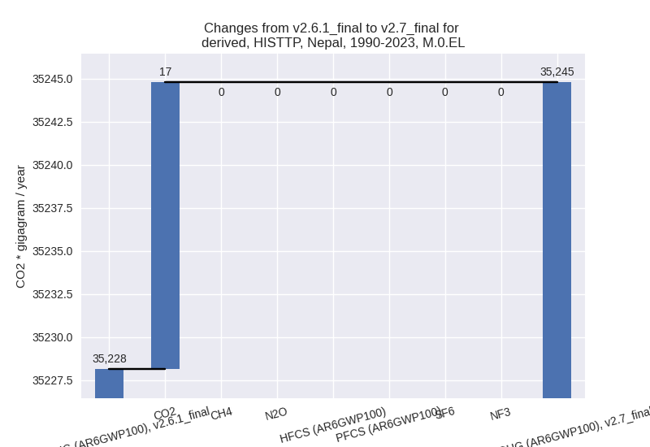
Detailed changes for the
scenarios:
country reported scenario
(HISTCR):
Most important changes
per time frame
For 2023 the following sector-gas combinations have
the highest absolute impact on national total KyotoGHG (AR6GWP100)
emissions in 2023 (top 5):
- 1: 1.A, CH4 with 7224.05 Gg CO2 / year (207.6%)
- 2: M.AG.ELV, N2O with -2598.97 Gg CO2 / year (-50.4%)
- 3: 2, CO2 with 2453.01 Gg CO2 / year (104.7%)
- 4: M.AG.ELV, CH4 with -2085.40 Gg CO2 / year (-47.4%)
- 5: 1.A, CO2 with 1917.67 Gg CO2 / year (15.5%)
For 1990-2023 the following sector-gas combinations
have the highest absolute impact on national total KyotoGHG (AR6GWP100)
emissions in 1990-2023 (top 5):
- 1: 1.A, CH4 with 6823.25 Gg CO2 / year (238.9%)
- 2: M.AG.ELV, CH4 with -2263.87 Gg CO2 / year (-50.3%)
- 3: M.AG.ELV, N2O with -1999.86 Gg CO2 / year (-51.0%)
- 4: 4, CH4 with -528.28 Gg CO2 / year (-31.7%)
- 5: 3.A, CH4 with 239.34 Gg CO2 / year (1.6%)
Changes in the main sectors for aggregate KyotoGHG (AR6GWP100)
are
- 1: Total sectoral emissions in 2022 are 24997.80 Gg
CO2 / year which is 42.6% of M.0.EL emissions. 2023 Emissions have
changed by 54.2% (9034.75 Gg CO2 /
year). 1990-2023 Emissions have changed by 80.5% (6642.98 Gg CO2 / year). For 2023
the changes per gas
are:
For 1990-2023 the changes per gas
are:
The changes come from the following subsectors:
- 1.A: Total sectoral emissions in 2022 are 24997.41
Gg CO2 / year which is 100.0% of category 1 emissions. 2023 Emissions
have changed by 54.8% (9099.02 Gg
CO2 / year). 1990-2023 Emissions have changed by 81.6% (6694.63 Gg CO2 / year). For 2023
the changes per gas
are:
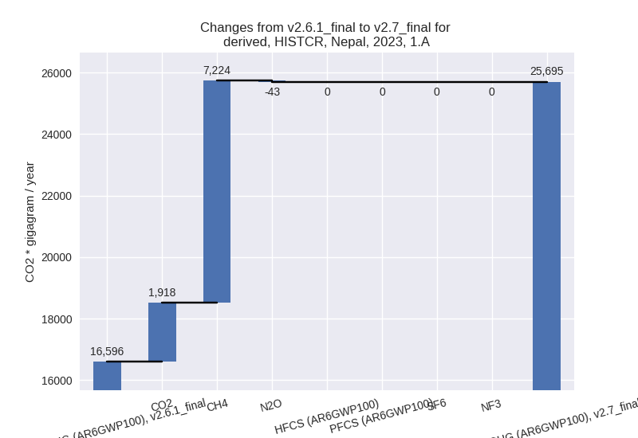
For 1990-2023 the changes per gas
are:
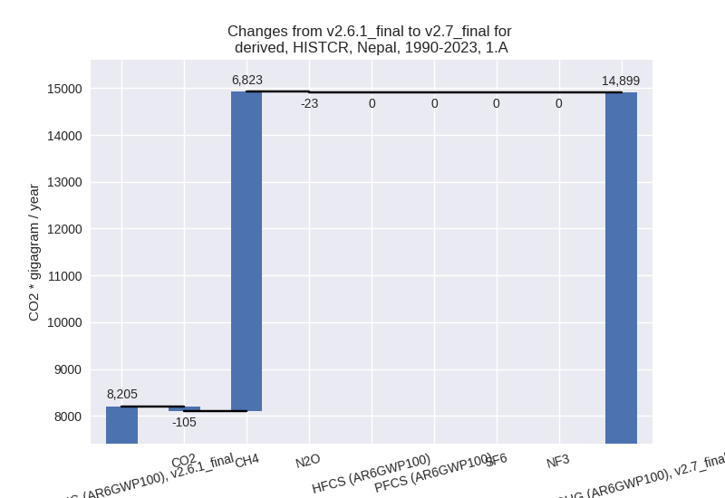
There is no subsector information available in PRIMAP-hist.
- 1.B.1: Total sectoral emissions in 2022 are 0.40 Gg
CO2 / year which is 0.0% of category 1 emissions. 2023 Emissions have
changed by -99.4% (-64.27 Gg CO2 /
year). 1990-2023 Emissions have changed by -99.4% (-51.64 Gg CO2 / year). For 2023
the changes per gas
are:
For 1990-2023 the changes per gas
are:
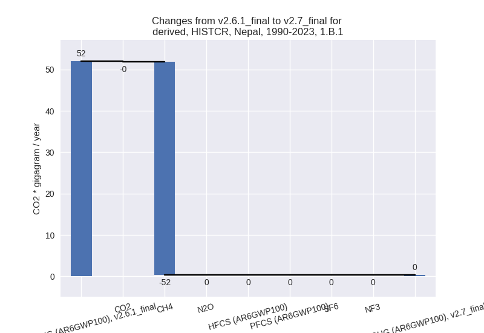
There is no subsector information available in PRIMAP-hist.
- 2: Total sectoral emissions in 2022 are 4797.43 Gg
CO2 / year which is 8.2% of M.0.EL emissions. 2023 Emissions have
changed by 104.6% (2453.01 Gg CO2 /
year). 1990-2023 Emissions have changed by -12.3% (-124.99 Gg CO2 / year). For 2023
the changes per gas
are:
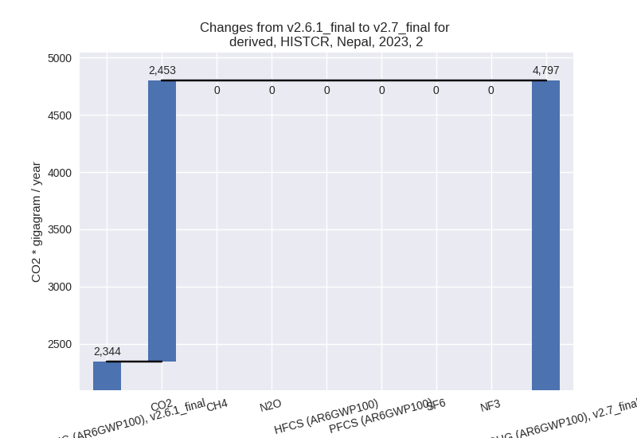
For 1990-2023 the changes per gas
are:
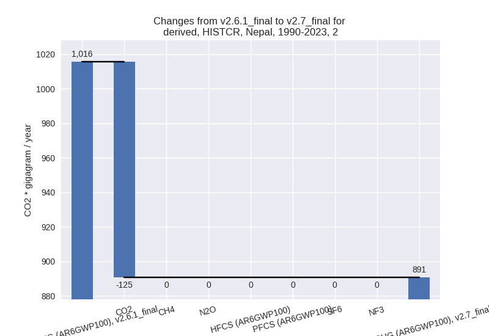
- M.AG: Total sectoral emissions in 2022 are 23609.81
Gg CO2 / year which is 40.3% of M.0.EL emissions. 2023 Emissions have
changed by -15.2% (-4249.51 Gg CO2 /
year). 1990-2023 Emissions have changed by -16.3% (-3862.93 Gg CO2 / year). For 2023
the changes per gas
are:
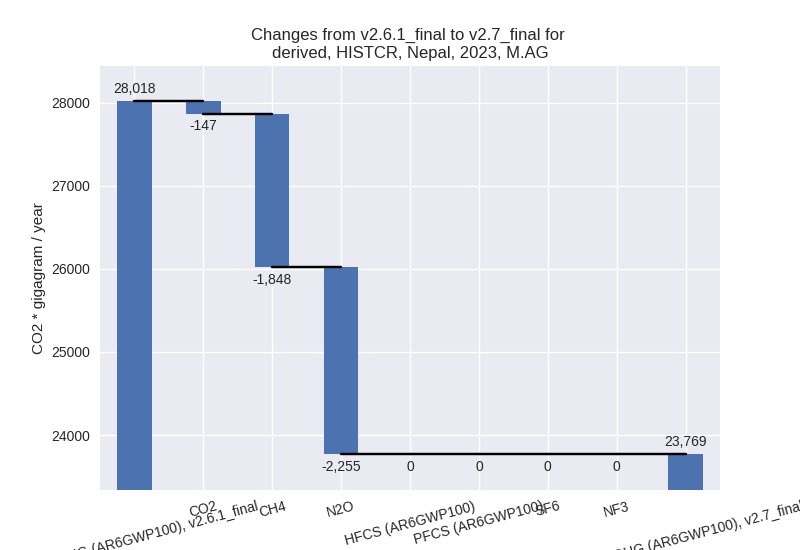
For 1990-2023 the changes per gas
are:
The changes come from the following subsectors:
- 3.A: Total sectoral emissions in 2022 are 18674.31
Gg CO2 / year which is 79.1% of category M.AG emissions. 2023 Emissions
have changed by 3.2% (582.22 Gg CO2
/ year). 1990-2023 Emissions have changed by 2.9% (445.67 Gg CO2 / year). For 2023 the
changes per gas
are:
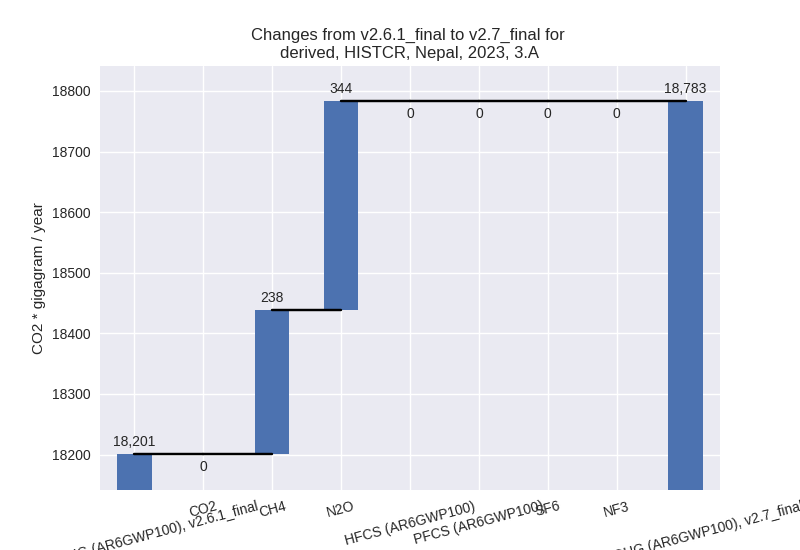
For 1990-2023 the changes per gas
are:
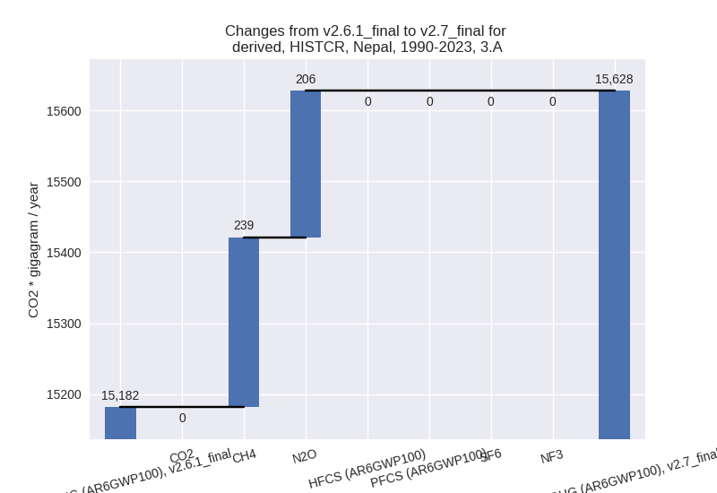
There is no subsector information available in PRIMAP-hist.
- M.AG.ELV: Total sectoral emissions in 2022 are
4935.51 Gg CO2 / year which is 20.9% of category M.AG emissions. 2023
Emissions have changed by -49.2%
(-4831.73 Gg CO2 / year). 1990-2023 Emissions have changed by -50.4% (-4308.60 Gg CO2 / year). For 2023
the changes per gas
are:
For 1990-2023 the changes per gas
are:
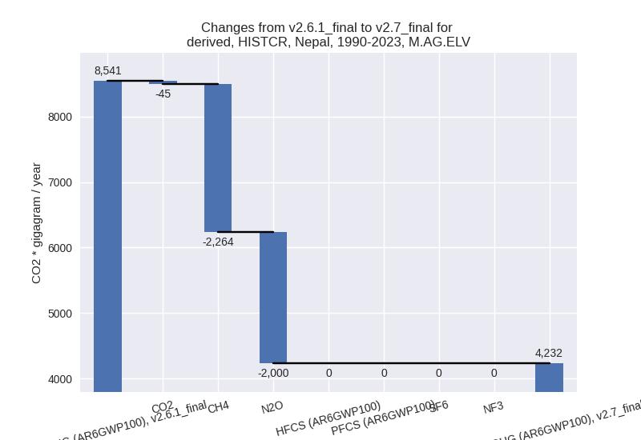
There is no subsector information available in PRIMAP-hist.
- 4: Total sectoral emissions in 2022 are 4844.44 Gg
CO2 / year which is 8.3% of M.0.EL emissions. 2023 Emissions have
changed by 101.7% (2477.68 Gg CO2 /
year). 1990-2023 Emissions have changed by -18.4% (-359.78 Gg CO2 / year). For 2023
the changes per gas
are:
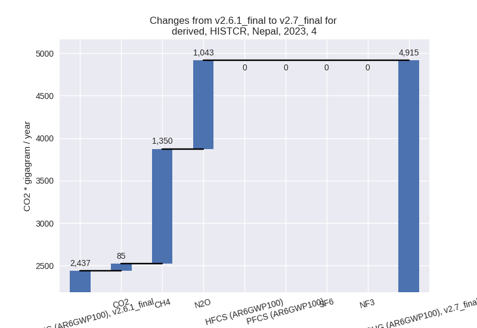
For 1990-2023 the changes per gas
are:
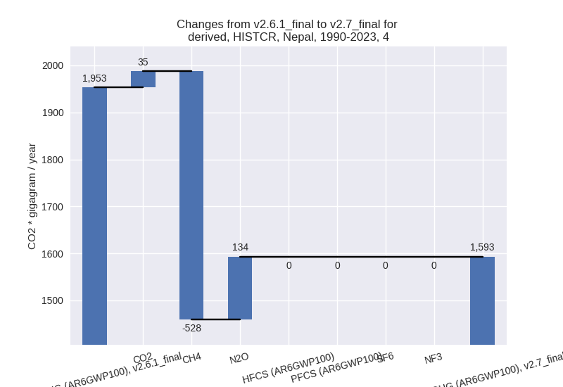
- 5: Total sectoral emissions in 2022 are 364.31 Gg
CO2 / year which is 0.6% of M.0.EL emissions. 2023 Emissions have
changed by 0.0% (0.00 Gg CO2 /
year). 1990-2023 Emissions have changed by 0.0% (0.00 Gg CO2 / year).
third party scenario (HISTTP):
Most important changes
per time frame
For 2023 the following sector-gas combinations have
the highest absolute impact on national total KyotoGHG (AR6GWP100)
emissions in 2023 (top 5):
- 1: 1.A, CO2 with -215.48 Gg CO2 / year (-1.7%)
- 2: 4, CO2 with 85.10 Gg CO2 / year (inf%)
- 3: M.AG.ELV, CO2 with 0.00 Gg CO2 / year (0.0%)
- 4: 5, N2O with 0.00 Gg CO2 / year (0.0%)
- 5: 4, N2O with 0.00 Gg CO2 / year (0.0%)
For 1990-2023 the following sector-gas combinations
have the highest absolute impact on national total KyotoGHG (AR6GWP100)
emissions in 1990-2023 (top 5):
- 1: 4, CO2 with 34.67 Gg CO2 / year (inf%)
- 2: 1.A, CO2 with -18.01 Gg CO2 / year (-0.4%)
- 3: 1.B.1, CO2 with 0.00 Gg CO2 / year (3.0%)
- 4: 1.A, N2O with 0.00 Gg CO2 / year (0.0%)
- 5: 5, N2O with 0.00 Gg CO2 / year (0.0%)
Changes in the main sectors for aggregate KyotoGHG (AR6GWP100)
are
- 1: Total sectoral emissions in 2022 are 15854.75 Gg
CO2 / year which is 32.5% of M.0.EL emissions. 2023 Emissions have
changed by -1.3% (-215.48 Gg CO2 /
year). 1990-2023 Emissions have changed by -0.2% (-18.01 Gg CO2 / year).
- 2: Total sectoral emissions in 2022 are 2343.92 Gg
CO2 / year which is 4.8% of M.0.EL emissions. 2023 Emissions have
changed by 0.0% (0.00 Gg CO2 /
year). 1990-2023 Emissions have changed by 0.0% (0.00 Gg CO2 / year).
- M.AG: Total sectoral emissions in 2022 are 27807.77
Gg CO2 / year which is 56.9% of M.0.EL emissions. 2023 Emissions have
changed by 0.0% (0.00 Gg CO2 /
year). 1990-2023 Emissions have changed by 0.0% (0.00 Gg CO2 / year).
- 4: Total sectoral emissions in 2022 are 2487.27 Gg
CO2 / year which is 5.1% of M.0.EL emissions. 2023 Emissions have
changed by 3.5% (85.09 Gg CO2 /
year). 1990-2023 Emissions have changed by 1.8% (34.67 Gg CO2 / year). For 2023 the
changes per gas
are:
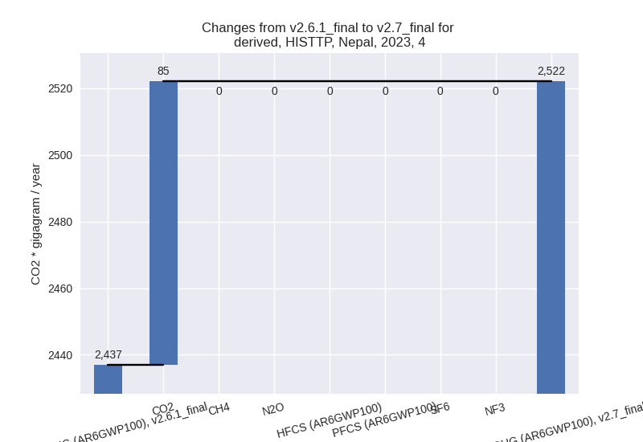
- 5: Total sectoral emissions in 2022 are 364.31 Gg
CO2 / year which is 0.7% of M.0.EL emissions. 2023 Emissions have
changed by 0.0% (0.00 Gg CO2 /
year). 1990-2023 Emissions have changed by 0.0% (0.00 Gg CO2 / year).